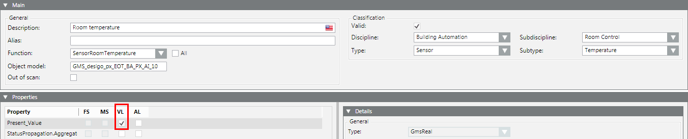
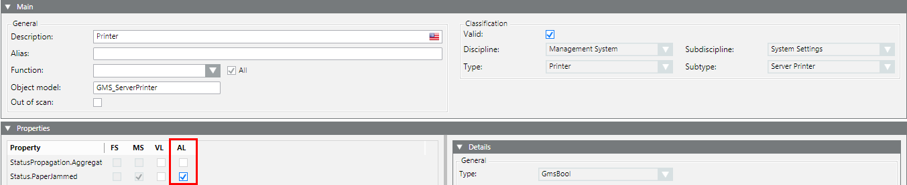

Logging Data Values or Events
In the Object Configurator tab, you can use the flags in the Properties expander to configure activity logging (AL) or value logging (VL) for a particular object.
Log Data Values
You want to log the values of a data point for subsequent display or evaluation.
- In System Browser, select the object whose data values you want to log. For example:
Project > Field Networks > [network] > Hardware > [device] > [data point]. - Select the Object Configurator tab.
- In the Properties expander:
a. Select the property you want to log (for example, Present_Value) and select the VL check box alongside it.
NOTE: The value is entered in the database for each change of state.
b. (Optional) From the Archive Group drop-down-list, select an archive group.
c. From the Filter Group drop-down-list, select a filter group. The selected filter group reduces the value of saved data in the history database. - Click Save
 .
.


If you want to log values for all objects of this type, perform the above steps on the corresponding object model:
a. In the Main expander, double-click the Object model label to quickly navigate to the object model for the currently selected object. For example,
Project > System Settings > Libraries > BA > Specific Devices > BACnet > Object Model.
b. In the Properties, expander, select the VL check box.
Note that:
- The VL check box is already selected if you have already used it to log history data point values.
- When the VL check box is cleared, the values can no longer be logged for history data point values.
Log Events
You want to log the occurrence of a particular event, such as a paper jam on a printer.
- In System Browser, select the printer, for example:
Project > Management System > Servers > Main Server > Local Printer. - Select the Object Configurator tab.
- In the Properties expander, select the property you want to log (for example, Status.PaperJammed) and select the AL check box.
NOTE: The value is entered in the database for each change of state. - (Optional) Select an archive group.
- Click Save .

If you want to log values for all objects of this type, perform the above steps on the corresponding object model:
a. In the Main expander, double-click the Object model label to quickly navigate to the object model for the currently selected object. For example,
Project > System Settings > Libraries > Global (HQ) > Base > Object Model > Server Station.
b. In the Properties expander, select the AL check box for the object model.
You must use the Log Viewer or activity log report to display data recorded in the Activity Log database.